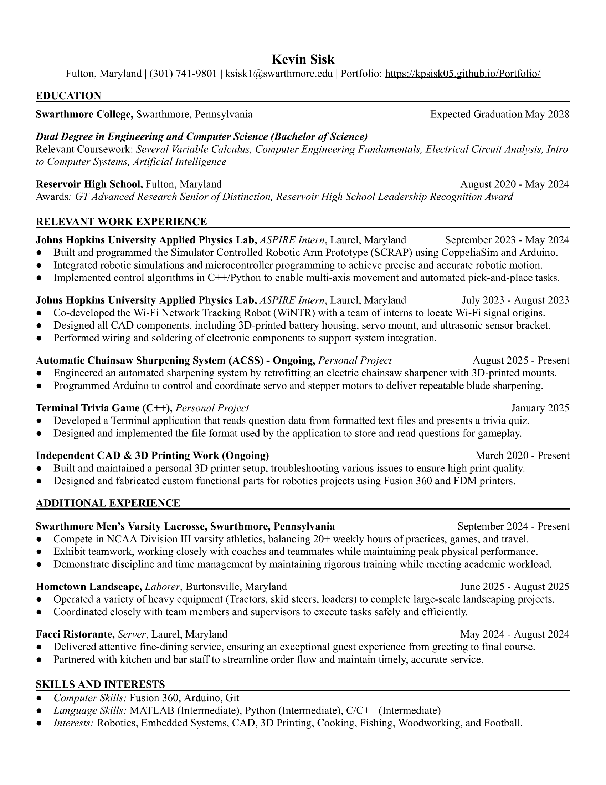

I am currently a student-athlete at Swarthmore College in my Sophomore year double-majoring in Engineering and Computer Science with a targeted interest in Robotics and embedded systems. Beyond academics, I play varsity lacrosse, valuing teamwork and discipline both on and off the field. I have gained hands-on experience through internships at Johns Hopkins University Applied Physics Laboratory (JHU APL), developing two robots in both group and individual settings. I am eager to bring my interdisciplinary experience and collaborative mindset to challenging engineering and software roles. Outside of engineering and lacrosse, I enjoy golfing, woodworking, and cooking.
Download Resume 